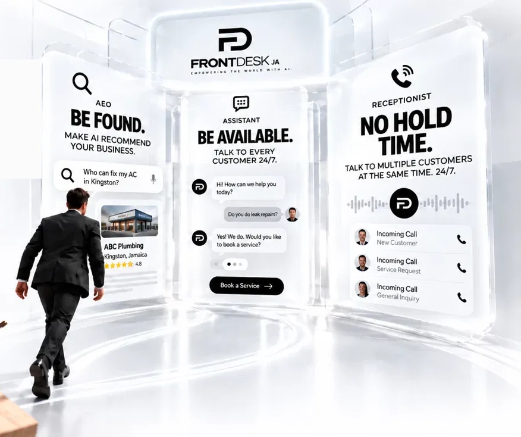
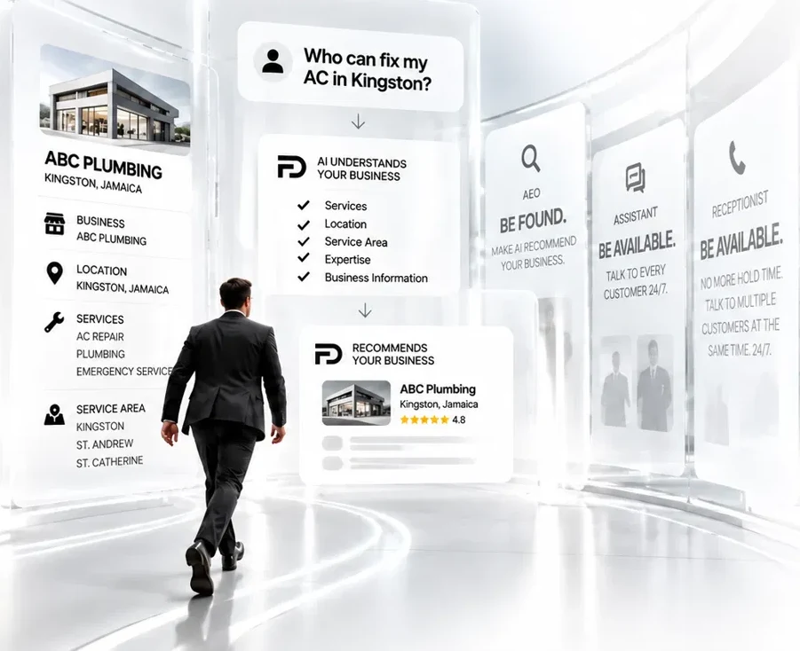
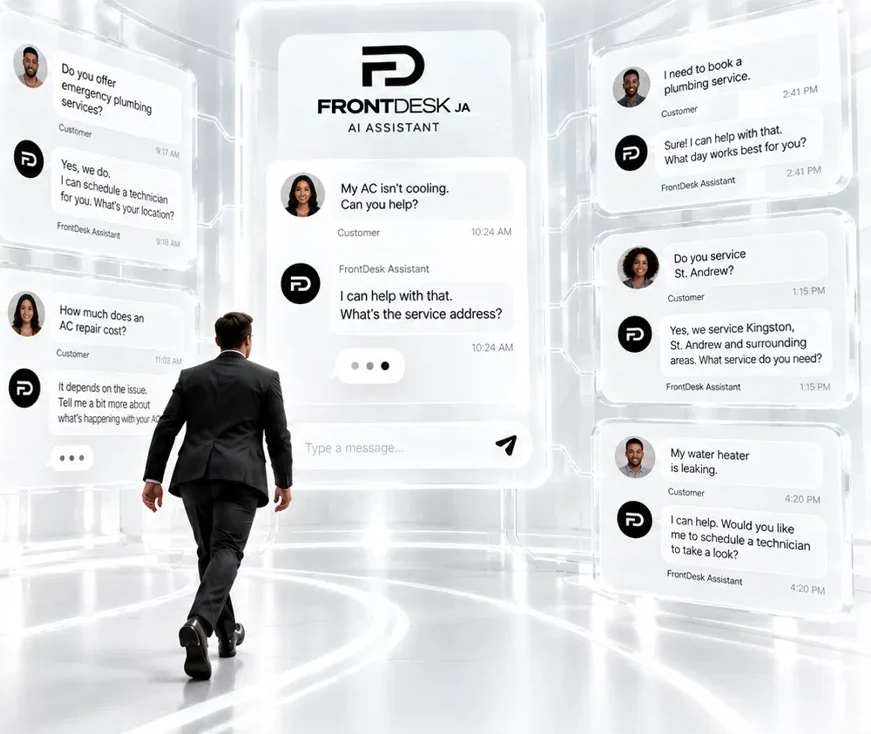
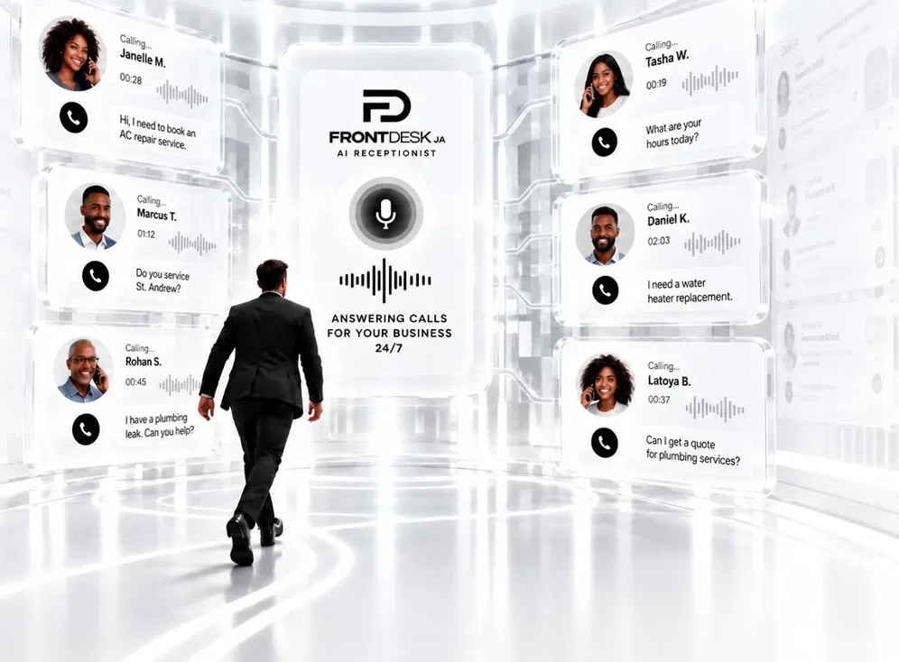

The front desk of the future
Stop getting trapped by admin work.
Let FrontDesk JA handle more of the repetitive work behind your business, so you can focus on what actually grows it.
The solution
The front desk of the future.
One system. A more productive business.
AI-powered capabilities that handle the repetitive work behind your business, so you can focus on what actually grows it.

AEO — Be found
Be found.
Make AI recommend your business.
We structure your business so AI understands what you do, where you do it, and who you serve, so the right customers can find you and choose you.

Assistant — Be available
Be available.
Talk to every customer 24/7.
FrontDesk’s AI Assistant continuously communicates with your customers, answers their questions, captures their information, and moves them toward booking, day or night.

Receptionist
No hold time.
Talk to multiple customers at the same time. 24/7.
FrontDesk’s AI Receptionist answers your business calls, talks to multiple customers at the same time, handles their questions, captures their information, and moves them toward booking — 24/7.

The work that matters
Less admin. More time to grow.
FrontDesk handles the repetitive work behind your business — so you can focus on what actually grows it.
- Respond faster
- Stay available
- Focus on your business